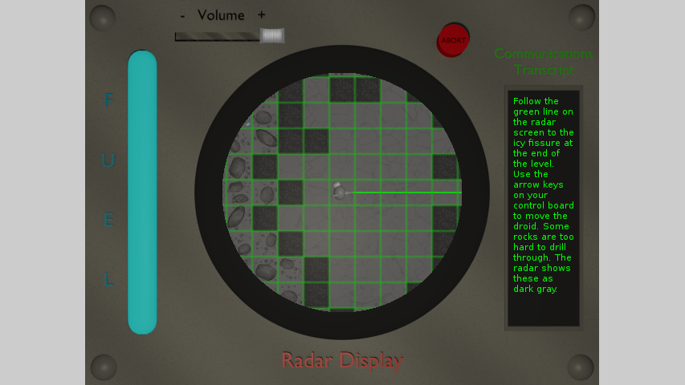

PROJECTS

Ariolimaxite
Ariolimaxite is a 2D, gridbased puzzle game centered around intense resource management, obfuscated information, and sci-fi themes. Drill down to the center of an asteroid to find fuel for your marooned spaceship.

Route 95
Route 95 is an audiovisual experience; be your own Desert Rocker on Route 95 and create songs that change the landscape around you with every note you play.